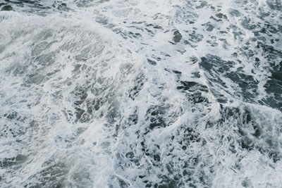
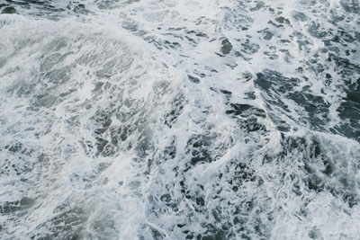

80% jpeg - 95k
quality is very good

png 24 - 271k
Quality is really good
80% jpeg - 95k
quality is very good
40% jpeg - 31k
quality is medium low
256 color gif - 105k
medium quality
8 color gif - 30k
Quality is very low
png 24 - 271k
Quality is really good
 
